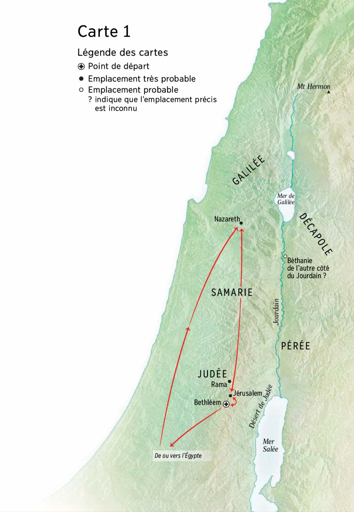

Naissance et jeunesse de Jésus

Carte 1
Annonce par l’ange Gabriel de la naissance de Jean le Baptiste à Zacharie
Date: -3
Lieu: Jérusalem, Judée
Luc 1:5 : Annonce de la naissance de Jean le Baptiste
5 Il y avait au temps d’Hérode, roi de Judée, un prêtre nommé Zacharie, de la classe d’Abia ; sa femme appartenait à la descendance d’Aaron et s’appelait Elisabeth. 6 Tous deux étaient justes devant Dieu et ils suivaient tous les commandements et observances du Seigneur d’une manière irréprochable. 7 Mais ils n’avaient pas d’enfant parce qu’Elisabeth était stérile et ils étaient tous deux avancés en âge. 8 Vint pour Zacharie le temps d’officier devant Dieu selon le tour de sa classe ; 9 suivant la coutume du sacerdoce, il fut désigné par le sort pour offrir l’encens à l’intérieur du sanctuaire du Seigneur. 10 Toute la multitude du peuple était en prière au-dehors à l’heure de l’offrande de l’encens. 11 Alors lui apparut un ange du Seigneur, debout à droite de l’autel de l’encens. 12 A sa vue, Zacharie fut troublé et la crainte s’abattit sur lui. 13 Mais l’ange lui dit : « Sois sans crainte, Zacharie, car ta prière a été exaucée. Ta femme Elisabeth t’enfantera un fils et tu lui donneras le nom de Jean. 14 Tu en auras joie et allégresse et beaucoup se réjouiront de sa naissance. 15 Car il sera grand devant le Seigneur ; il ne boira ni vin ni boisson fermentée et il sera rempli de l’Esprit Saint dès le sein de sa mère. 16 Il ramènera beaucoup de fils d’Israël au Seigneur leur Dieu ; 17 et il marchera par devant sous le regard de Dieu, avec l’esprit et la puissance d’Elie, pour ramener le cœur des pères vers leurs enfants et conduire les rebelles à penser comme les justes, afin de former pour le Seigneur un peuple préparé. » 18 Zacharie dit à l’ange : « A quoi le saurai-je ? Car je suis un vieillard, et ma femme est avancée en âge. » 19 L’ange lui répondit : « Je suis Gabriel qui me tiens devant Dieu. J’ai été envoyé pour te parler et pour t’annoncer cette bonne nouvelle. 20 Eh bien, tu vas être réduit au silence et tu ne pourras plus parler jusqu’au jour où cela se réalisera, parce que tu n’as pas cru à mes paroles qui s’accompliront en leur temps. » 21 Le peuple attendait Zacharie et s’étonnait qu’il s’attardât dans le sanctuaire. 22 Quand il sortit, il ne pouvait leur parler et ils comprirent qu’il avait eu une vision dans le sanctuaire ; il leur faisait des signes et demeurait muet. 23 Quand prit fin son temps de service, il repartit chez lui. 24 Après quoi Elisabeth, sa femme, devint enceinte ; cinq mois durant elle s’en cacha ; elle se disait : 25 « Voilà ce qu’a fait pour moi le Seigneur au temps où il a jeté les yeux sur moi pour mettre fin à ce qui faisait ma honte devant les hommes. »
Annonce par l’ange Gabriel de la naissance de Jésus à Marie
Date: -2
Lieu: Nazareth, Galilée
Luc 1:26 : Annonce de la naissance de Jésus
26 Le sixième mois, l’ange Gabriel fut envoyé par Dieu dans une ville de Galilée du nom de Nazareth, 27 à une jeune fille accordée en mariage à un homme nommé Joseph, de la famille de David ; cette jeune fille s’appelait Marie. 28 L’ange entra auprès d’elle et lui dit : « Sois joyeuse, toi qui as la faveur de Dieu, le Seigneur est avec toi. » 29 A ces mots, elle fut très troublée, et elle se demandait ce que pouvait signifier cette salutation. 30 L’ange lui dit : « Sois sans crainte, Marie, car tu as trouvé grâce auprès de Dieu. 31 Voici que tu vas être enceinte, tu enfanteras un fils et tu lui donneras le nom de Jésus. 32 Il sera grand et sera appelé Fils du Très-Haut. Le Seigneur Dieu lui donnera le trône de David son père ; 33 il régnera pour toujours sur la famille de Jacob, et son règne n’aura pas de fin. » 34 Marie dit à l’ange : « Comment cela se fera-t-il puisque je n’ai pas de relations conjugales ? » 35 L’ange lui répondit : « L’Esprit Saint viendra sur toi et la puissance du Très-Haut te couvrira de son ombre ; c’est pourquoi celui qui va naître sera saint et sera appelé Fils de Dieu. 36 Et voici que Elisabeth, ta parente, est elle aussi enceinte d’un fils dans sa vieillesse et elle en est à son sixième mois, elle qu’on appelait la stérile, 37 car rien n’est impossible à Dieu. » 38 Marie dit alors : « Je suis la servante du Seigneur. Que tout se passe pour moi comme tu me l’as dit ! » Et l’ange la quitta.
Visite de Marie à Élisabeth
Date: -2
Lieu: Judée
Luc 1:39 : Visite de Marie à Elisabeth
39 En ce temps-là, Marie partit en hâte pour se rendre dans le haut pays, dans une ville de Juda. 40 Elle entra dans la maison de Zacharie et salua Elisabeth. 41 Or, lorsque Elisabeth entendit la salutation de Marie, l’enfant bondit dans son sein et Elisabeth fut remplie du Saint Esprit. 42 Elle poussa un grand cri et dit : « Tu es bénie plus que toutes les femmes, béni aussi est le fruit de ton sein ! 43 Comment m’est-il donné que vienne à moi la mère de mon Seigneur ? 44 Car lorsque ta salutation a retenti à mes oreilles, voici que l’enfant a bondi d’allégresse en mon sein. 45 Bienheureuse celle qui a cru : ce qui lui a été dit de la part du Seigneur s’accomplira ! » 46 Alors Marie dit : « Mon âme exalte le Seigneur 47 et mon esprit s’est rempli d’allégresse à cause de Dieu, mon Sauveur, 48 parce qu’il a porté son regard sur son humble servante. Oui, désormais, toutes les générations me proclameront bienheureuse, 49 parce que le Puissant a fait pour moi de grandes choses : saint est son Nom. 50 Sa bonté s’étend de génération en génération sur ceux qui le craignent. 51 Il est intervenu de toute la force de son bras ; il a dispersé les hommes à la pensée orgueilleuse ; 52 il a jeté les puissants à bas de leurs trônes et il a élevé les humbles ; 53 les affamés, il les a comblés de biens et les riches, il les a renvoyés les mains vides. 54 Il est venu en aide à Israël son serviteur en souvenir de sa bonté, 55 comme il l’avait dit à nos pères, en faveur d’Abraham et de sa descendance pour toujours. » 56 Marie demeura avec Elisabeth environ trois mois, puis elle retourna chez elle. Naissance et circoncision de Jean le Baptiste
- Marie passe 3 mois en Judée
Naissance de Jean le Baptiste
Date: -3
Luc 1:57 : Naissance et circoncision de Jean le Baptiste
57 Pour Elisabeth arriva le temps où elle devait accoucher et elle mit au monde un fils. 58 Ses voisins et ses parents apprirent que le Seigneur l’avait comblée de sa bonté et ils se réjouissaient avec elle. 59 Or, le huitième jour, ils vinrent pour la circoncision de l’enfant et ils voulaient l’appeler comme son père, Zacharie. 60 Alors sa mère prit la parole : « Non, dit-elle, il s’appellera Jean. » 61 Ils lui dirent : « Il n’y a personne dans ta parenté qui porte ce nom. » 62 Et ils faisaient des signes au père pour savoir comment il voulait qu’on l’appelle. 63 Il demanda une tablette et écrivit ces mots : « Son nom est Jean » ; et tous furent étonnés. 64 A l’instant sa bouche et sa langue furent libérées et il parlait, bénissant Dieu. 65 Alors la crainte s’empara de tous ceux qui habitaient alentour ; et dans le haut pays de Judée tout entier on parlait de tous ces événements. 66 Tous ceux qui les apprirent les gravèrent dans leur cœur ; ils se disaient : « Que sera donc cet enfant ? » Et vraiment la main du Seigneur était avec lui.
Luc 1:67 : Psaume prophétique de Zacharie
67 Zacharie, son père, fut rempli de l’Esprit Saint et il prophétisa en ces termes : 68 « Béni soit le Seigneur, le Dieu d’Israël, parce qu’il a visité son peuple, accompli sa libération, 69 et nous a suscité une force de salut dans la famille de David, son serviteur. 70 C’est ce qu’il avait annoncé par la bouche de ses saints prophètes d’autrefois : 71 un salut qui nous libère de nos ennemis et des mains de tous ceux qui nous haïssent. 72 Il a montré sa bonté envers nos pères et s’est rappelé son alliance sainte, 73 le serment qu’il a fait à Abraham notre père : il nous accorderait, 74 après nous avoir arrachés aux mains des ennemis, de lui rendre sans crainte notre culte 75 dans la piété et la justice sous son regard, tout au long de nos jours. 76 Et toi, petit enfant, tu seras appelé prophète du Très-Haut, car tu marcheras par devant sous le regard du Seigneur, pour préparer ses routes, 77 pour donner à son peuple la connaissance du salut par le pardon des péchés. 78 C’est l’effet de la bonté profonde de notre Dieu : grâce à elle nous a visités l’astre levant venu d’en haut. 79 Il est apparu à ceux qui se trouvent dans les ténèbres et l’ombre de la mort, afin de guider nos pas sur la route de la paix. »
Luc 1:80 : Jeunesse de Jean le Baptiste
80 Quant à l’enfant, il grandissait et son esprit se fortifiait ; et il fut dans les déserts jusqu’au jour de sa manifestation à Israël.
La naissance de Jésus annoncée à Joseph
Lieu: Nazareth, Galilée
Matthieu 1:18 : L’annonce à Joseph
18 Voici quelle fut l’origine de Jésus Christ. Marie, sa mère, était accordée en mariage à Joseph ; or, avant qu’ils aient habité ensemble, elle se trouva enceinte par le fait de l’Esprit Saint. 19 Joseph, son époux, qui était un homme juste et ne voulait pas la diffamer publiquement, résolut de la répudier secrètement. 20 Il avait formé ce projet, et voici que l’ange du Seigneur lui apparut en songe et lui dit : « Joseph, fils de David, ne crains pas de prendre chez toi Marie, ton épouse : ce qui a été engendré en elle vient de l’Esprit Saint, 21 et elle enfantera un fils auquel tu donneras le nom de Jésus, car c’est lui qui sauvera son peuple de ses péchés. » 22 Tout cela arriva pour que s’accomplisse ce que le Seigneur avait dit par le prophète : 23 Voici que la vierge concevra et enfantera un fils auquel on donnera le nom d’Emmanuel, ce qui se traduit : « Dieu avec nous ». 24 A son réveil, Joseph fit ce que l’ange du Seigneur lui avait prescrit : il prit chez lui son épouse, 25 mais il ne la connut pas jusqu’à ce qu’elle eût enfanté un fils, auquel il donna le nom de Jésus.
Naissance de Jésus
Date: -2 vers le 1er Octobre
Lieu: Bethléem, Judée
Luc 2:1 : Naissance et circoncision de Jésus
1 Or, en ce temps-là, parut un décret de César Auguste pour faire recenser le monde entier. 2 Ce premier recensement eut lieu à l’époque où Quirinius était gouverneur de Syrie. 3 Tous allaient se faire recenser, chacun dans sa propre ville ; 4 Joseph aussi monta de la ville de Nazareth en Galilée à la ville de David qui s’appelle Bethléem en Judée, parce qu’il était de la famille et de la descendance de David, 5 pour se faire recenser avec Marie son épouse, qui était enceinte. 6 Or, pendant qu’ils étaient là, le jour où elle devait accoucher arriva ; 7 elle accoucha de son fils premier-né, l’emmaillota et le déposa dans une mangeoire, parce qu’il n’y avait pas de place pour eux dans la salle d’hôtes.
- Jésus est né 5 mois et demi aprés Jean
Annonce des anges aux bergers
Date: -2, début Octobre
Lieu: Près de Bethléem, Judée
Luc 2:8 : Naissance et circoncision de Jésus
8 Il y avait dans le même pays des bergers qui vivaient aux champs et montaient la garde pendant la nuit auprès de leur troupeau. 9 Un ange du Seigneur se présenta devant eux, la gloire du Seigneur les enveloppa de lumière et ils furent saisis d’une grande crainte. 10 L’ange leur dit : « Soyez sans crainte, car voici, je viens vous annoncer une bonne nouvelle, qui sera une grande joie pour tout le peuple : 11 Il vous est né aujourd’hui, dans la ville de David, un Sauveur qui est le Christ Seigneur ; 12 et voici le signe qui vous est donné : vous trouverez un nouveau-né emmailloté et couché dans une mangeoire. » 13 Tout à coup il y eut avec l’ange l’armée céleste en masse qui chantait les louanges de Dieu et disait : 14 « Gloire à Dieu au plus haut des cieux et sur la terre paix pour ses bien-aimés. » 15 Or, quand les anges les eurent quittés pour le ciel, les bergers se dirent entre eux : « Allons donc jusqu’à Bethléem et voyons ce qui est arrivé, ce que le Seigneur nous a fait connaître. » 16 Ils y allèrent en hâte et trouvèrent Marie, Joseph et le nouveau-né couché dans la mangeoire. 17 Après avoir vu, ils firent connaître ce qui leur avait été dit au sujet de cet enfant. 18 Et tous ceux qui les entendirent furent étonnés de ce que leur disaient les bergers. 19 Quant à Marie, elle retenait tous ces événements en en cherchant le sens. 20 Puis les bergers s’en retournèrent, chantant la gloire et les louanges de Dieu pour tout ce qu’ils avaient entendu et vu, en accord avec ce qui leur avait été annoncé.
Circoncision de Jésus et présentation au temple de Bethléem. Purification de Marie.
Date: -2, J+40 après naissance
Lieu: Bethléem ou Jérusalem, Judée
Luc 2:21 : Naissance et circoncision de Jésus
21 Huit jours plus tard, quand vint le moment de circoncire l’enfant, on l’appela du nom de Jésus, comme l’ange l’avait appelé avant sa conception.
Luc 2:22 : Présentation de Jésus au temple. Prophéties de Syméon et d’Anne
22 Puis quand vint le jour où, suivant la loi de Moïse, ils devaient être purifiés, ils l’amenèrent à Jérusalem pour le présenter au Seigneur 23 – ainsi qu’il est écrit dans la loi du Seigneur : Tout garçon premier-né sera consacré au Seigneur – 24 et pour offrir en sacrifice, suivant ce qui est dit dans la loi du Seigneur, un couple de tourterelles ou deux petits pigeons. 25 Or, il y avait à Jérusalem un homme du nom de Syméon. Cet homme était juste et pieux, il attendait la consolation d’Israël et l’Esprit Saint était sur lui. 26 Il lui avait été révélé par l’Esprit Saint qu’il ne verrait pas la mort avant d’avoir vu le Christ du Seigneur. 27 Il vint alors au temple poussé par l’Esprit ; et quand les parents de l’enfant Jésus l’amenèrent pour faire ce que la Loi prescrivait à son sujet, 28 il le prit dans ses bras et il bénit Dieu en ces termes : 29 « Maintenant, Maître, c’est en paix, comme tu l’as dit, que tu renvoies ton serviteur. 30 Car mes yeux ont vu ton salut, 31 que tu as préparé face à tous les peuples : 32 lumière pour la révélation aux païens et gloire d’Israël ton peuple. » 33 Le père et la mère de l’enfant étaient étonnés de ce qu’on disait de lui. 34 Syméon les bénit et dit à Marie sa mère : « Il est là pour la chute ou le relèvement de beaucoup en Israël et pour être un signe contesté 35 – et toi-même, un glaive te transpercera l’âme ; ainsi seront dévoilés les débats de bien des cœurs. » 36 Il y avait aussi une prophétesse, Anne, fille de Phanuel, de la tribu d’Aser. Elle était fort avancée en âge ; après avoir vécu sept ans avec son mari, 37 elle était restée veuve et avait atteint l’âge de quatre-vingt-quatre ans. Elle ne s’écartait pas du temple, participant au culte nuit et jour par des jeûnes et des prières. 38 Survenant au même moment, elle se mit à célébrer Dieu et à parler de l’enfant à tous ceux qui attendaient la libération de Jérusalem.
- Jésus est circoncis au 8e jour après sa naissance puis présenté au temple par ses parents après le 40e jour. (Lév. 12:1-4)
Visite des mages
Date: -2, 40/50 jours après naissance
Lieu: Bethléem, Judée
Matthieu 2:1 : La visite des mages
1 Jésus étant né à Bethléem de Judée, au temps du roi Hérode, voici que des mages venus d’Orient arrivèrent à Jérusalem 2 et demandèrent : « Où est le roi des Juifs qui vient de naître ? Nous avons vu son astre à l’Orient et nous sommes venus lui rendre hommage. » 3 A cette nouvelle, le roi Hérode fut troublé, et tout Jérusalem avec lui. 4 Il assembla tous les grands prêtres et les scribes du peuple, et s’enquit auprès d’eux du lieu où le Messie devait naître. 5 « A Bethléem de Judée, lui dirent-ils, car c’est ce qui est écrit par le prophète : 6 Et toi, Bethléem, terre de Juda, tu n’es certes pas le plus petit des chefs-lieux de Juda : car c’est de toi que sortira le chef qui fera paître Israël, mon peuple. » 7 Alors Hérode fit appeler secrètement les mages, se fit préciser par eux l’époque à laquelle l’astre apparaissait, 8 et les envoya à Bethléem en disant : « Allez vous renseigner avec précision sur l’enfant ; et, quand vous l’aurez trouvé, avertissez-moi pour que, moi aussi, j’aille lui rendre hommage. » 9 Sur ces paroles du roi, ils se mirent en route ; et voici que l’astre, qu’ils avaient vu à l’Orient, avançait devant eux jusqu’à ce qu’il vînt s’arrêter au-dessus de l’endroit où était l’enfant. 10 A la vue de l’astre, ils éprouvèrent une très grande joie. 11 Entrant dans la maison, ils virent l’enfant avec Marie, sa mère, et, se prosternant, ils lui rendirent hommage ; ouvrant leurs coffrets, ils lui offrirent en présent de l’or, de l’encens et de la myrrhe. 12 Puis, divinement avertis en songe de ne pas retourner auprès d’Hérode, ils se retirèrent dans leur pays par un autre chemin.
Fuite en Égypte
Date: -2
Lieu: Égypte
Matthieu 2:13 : La fuite en Egypte
13 Après leur départ, voici que l’ange du Seigneur apparaît en songe à Joseph et lui dit : « Lève-toi, prends avec toi l’enfant et sa mère, et fuis en Egypte ; restes-y jusqu’à nouvel ordre, car Hérode va rechercher l’enfant pour le faire périr. » 14 Joseph se leva, prit avec lui l’enfant et sa mère, de nuit, et se retira en Egypte. 15 Il y resta jusqu’à la mort d’Hérode, pour que s’accomplisse ce qu’avait dit le Seigneur par le prophète : D’Egypte, j’ai appelé mon fils.
Meurtre des enfants de Bethléem par Hérode
Matthieu 2:16 : Massacre des enfants de Bethléem
16 Alors Hérode, se voyant joué par les mages, entra dans une grande fureur et envoya tuer, dans Bethléem et tout son territoire, tous les enfants jusqu’à deux ans, d’après l’époque qu’il s’était fait préciser par les mages. 17 Alors s’accomplit ce qui avait été dit par le prophète Jérémie : 18 Une voix dans Rama s’est fait entendre, des pleurs et une longue plainte : c’est Rachel qui pleure ses enfants et ne veut pas être consolée, parce qu’ils ne sont plus.
Retour à Nazareth par crainte d’Archélaüs
Date: -1
Lieu: Nazareth, Galilée
Luc 2:39 : Présentation de Jésus au temple. Prophéties de Syméon et d’Anne
39 Lorsqu’ils eurent accompli tout ce que prescrivait la loi du Seigneur, ils retournèrent en Galilée, dans leur ville de Nazareth.
Luc 2:40 : Jeunesse de Jésus
40 Quant à l’enfant, il grandissait et se fortifiait, tout rempli de sagesse, et la faveur de Dieu était sur lui.
Matthieu 2:19 : Retour d’Egypte. Etablissement à Nazareth
19 Après la mort d’Hérode, l’ange du Seigneur apparaît en songe à Joseph, en Egypte, 20 et lui dit : « Lève-toi, prends avec toi l’enfant et sa mère, et mets-toi en route pour la terre d’Israël ; en effet, ils sont morts, ceux qui en voulaient à la vie de l’enfant. » 21 Joseph se leva, prit avec lui l’enfant et sa mère, et il entra dans la terre d’Israël. 22 Mais, apprenant qu’Archélaüs régnait sur la Judée à la place de son père Hérode, il eut peur de s’y rendre ; et divinement averti en songe, il se retira dans la région de Galilée 23 et vint habiter une ville appelée Nazareth, pour que s’accomplisse ce qui avait été dit par les prophètes : Il sera appelé Nazôréen.
Jésus au temple de Jérusalem à 12 ans
Date: +10
Lieu: Jérusalem, Judée
Luc 2:41 : Premières paroles de Jésus au temple
41 Ses parents allaient chaque année à Jérusalem pour la fête de la Pâque. 42 Quand il eut douze ans, comme ils y étaient montés suivant la coutume de la fête 43 et qu’à la fin des jours de fête ils s’en retournaient, le jeune Jésus resta à Jérusalem sans que ses parents s’en aperçoivent. 44 Pensant qu’il était avec leurs compagnons de route, ils firent une journée de chemin avant de le chercher parmi leurs parents et connaissances. 45 Ne l’ayant pas trouvé, ils retournèrent à Jérusalem en le cherchant. 46 C’est au bout de trois jours qu’ils le retrouvèrent dans le temple, assis au milieu des maîtres, à les écouter et les interroger. 47 Tous ceux qui l’entendaient s’extasiaient sur l’intelligence de ses réponses. 48 En le voyant, ils furent frappés d’étonnement et sa mère lui dit : « Mon enfant, pourquoi as-tu agi de la sorte avec nous ? Vois, ton père et moi, nous te cherchons tout angoissés. » 49 Il leur dit : « Pourquoi donc me cherchiez-vous ? Ne saviez-vous pas qu’il me faut être chez mon Père ? » 50 Mais eux ne comprirent pas ce qu’il leur disait.
Jésus rentre à Nazareth (et devient charpentier);
Date: +10
Lieu: Nazareth, Galilée
Luc 2:51 : Premières paroles de Jésus au temple
51 Puis il descendit avec eux pour aller à Nazareth ; il leur était soumis ; et sa mère retenait tous ces événements dans son cœur. 52 Jésus progressait en sagesse et en taille, et en faveur auprès de Dieu et auprès des hommes.